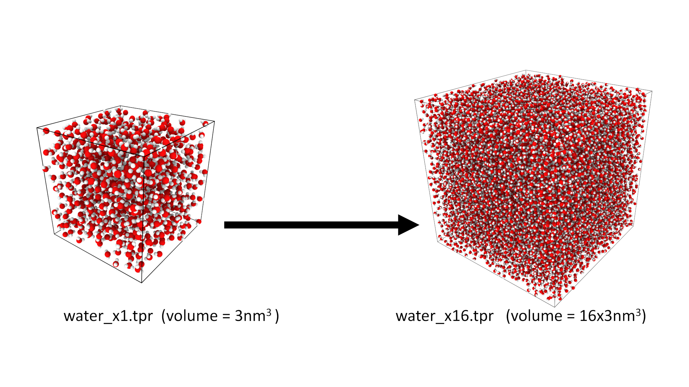
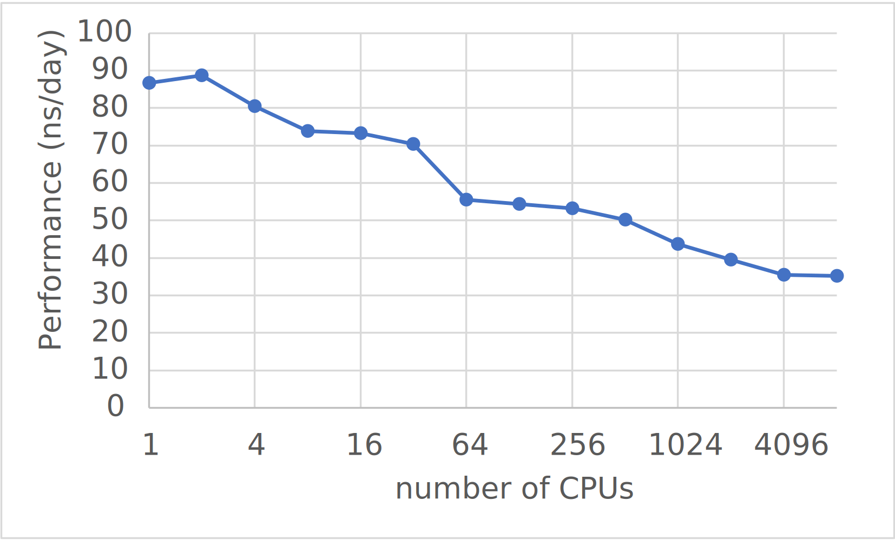

Part 2
In this section you will use a different benchmark system and investigate the weak scaling parallel performance.
The benchmark system
The benchmark system we will use to investigate the weak scaling is a box of water. This is a simple system than can be created for different system sizes.
The initial box size is 5nm x 5nm x 5nm and contains 884 water molecules. We have provided input files for this system water_x1.tpr and multiple larger systems with 2, 4, 8, ... up to 8096 times the volume (water_x2.tpr, water_x4.tpr, water_x8.tpr, ... , water_8096.tpr).

Running the benchmark
The benchmarks are designed such that water_x1.tpr is a suitable size for running on 1 core. (GROMACS works best with ~1000 atoms per CPU)
An example slurm script to run the benchmark on ARCHER2 is shown below
#!/bin/bash
#SBATCH --job-name=gmx_bench
#SBATCH --nodes=1
#SBATCH --tasks-per-node=1
#SBATCH --cpus-per-task=1
#SBATCH --time=00:10:00
# Replace [budget code] below with your project code (e.g. t01)
#SBATCH --account=z19
#SBATCH --partition=standard
#SBATCH --qos=standard
# Setup the environment
module load gromacs
export OMP_NUM_THREADS=1
srun --distribution=block:block --hint=nomultithread gmx_mpi mdrun -s water_x1.tpr -v
nodes` xtasks-per-node= the system size.
i.e for water_x256.tpr use--nodes=2and--tasks-per-node=128``
Once again the important number is the ns/day figure.
Things to investigate
-
You should run the benchmarks systems where the number of cores used scales with the system size. I.e run
water_x1.tprwith 1 core,water_x2.tprwith 2 cores,water_128.tprwith 128 cores etc. This investigates the weak scaling -
Plot the results and look at the difference between the intra-node and inter-node scaling.
We have plotted our results for version 2021.3 of GROMACS on ARCHER2 below:
